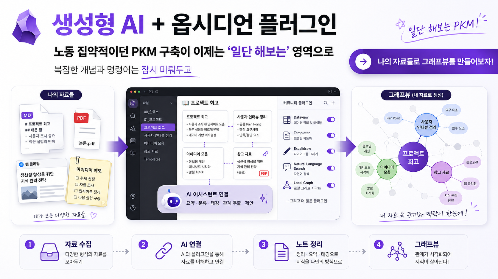

나만의 PKM, 허들을 넘다

PKM(개인지식관리체계)은 전문가들의 전유물이었다. 다양한 도구들이 존재했고, 사용자 분포는 대체로 다음과 같다.
허들을 넘지 못한 70% · 넘었지만 유지 못 한 20% · 유지하지만 갈 길 잃은 5% · 프론티어 5%
흩어진 자료와 반복 설명의 비용을, 지식 관리 구조와 재사용 가능한 AI 맥락으로 해결한다.
| 문제 | 현상 | 교육에서 해결하는 방식 |
|---|---|---|
| 자료가 흩어짐 | PPT, PDF, HWP, 웹자료, 메모가 각자 따로 존재 | Obsidian Vault와 raw/wiki/output 구조로 통합 |
| 다시 찾기 어려움 | 예전에 쓴 강의자료를 매번 다시 검색 | Wiki-link, Backlink, Search, Graph View로 재탐색 |
| AI에 매번 설명해야 함 | 강의 맥락, 고객사 맥락을 매번 프롬프트에 반복 | LLM Wiki를 통해 재사용 가능한 맥락 구축 |
| 자료 변환 품질이 낮음 | PDF/PPT를 요약하면 표·그림·출처가 사라짐 | 원본 보존, sources 속성, 검수 체크리스트 적용 |
| 시각화가 부족함 | 노트가 쌓여도 구조가 보이지 않음 | Graph View와 Canvas로 지식 구조 시각화 |
wiki/concepts/로 분리하면 LLM Wiki의 합성 결과가 재사용 가능한 지식 단위가 된다.sources 속성으로 자동 생성 결과를 관리해야 한다.27124, MCP 서버 등은 입문자에게 진입 장벽이 될 수 있다. 설치 모듈, 원클릭 스크립트, 트러블슈팅 가이드가 전제되어야 한다.바이브 옵시디언 · 옵시디언 + 생성형 AI로 만드는 나만의 LLM Wiki